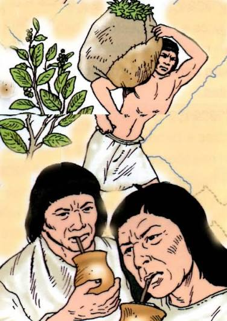
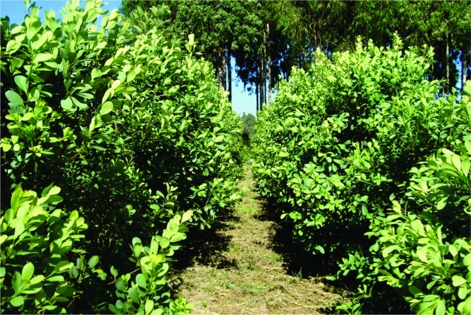
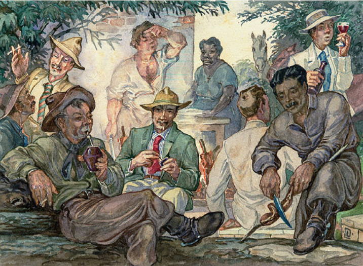

chimarrao na trdicao e cultura
A palavra "chimarrão" vem do espanhol cimarrón, que inicialmente era usada para descrever animais domesticados que fugiam e voltavam a ser selvagens.

Da onde vem o chimarrao?
O chimarrão tem origem entre os povos indígenas da América do Sul, especialmente os Guarani, que já consumiam as folhas da erva-mate muito antes da chegada dos europeus. Eles colhiam as folhas da planta, secavam, trituravam e preparavam uma bebida estimulante, além de utilizarem a erva em rituais e como item de troca.

importancia cultural
O chimarrão tem uma grande importância cultural na América do Sul, especialmente no sul do Brasil, onde é considerado um símbolo de identidade regional. Alguns dos principais aspectos de sua importância cultural são: Símbolo de convivência: Compartilhar a cuia de chimarrão é um gesto de amizade, confiança e hospitalidade. É comum reunir familiares, amigos e colegas para uma "roda de chimarrão". Herança indígena: O hábito de consumir erva-mate foi herdado dos Guarani, preservando uma tradição que existe há séculos. Identidade regional: No Rio Grande do Sul, Santa Catarina e Paraná, o chimarrão faz parte do cotidiano e é um dos elementos mais marcantes da cultura local. Também é muito presente no Uruguai, Argentina e Paraguai. Tradição e costumes: Existem formas tradicionais de preparar e servir o chimarrão, como organizar a erva na cuia, inserir a bomba corretamente e respeitar a ordem de quem toma quando a bebida é compartilhada. Patrimônio cultural: O chimarrão é frequentemente associado às tradições gaúchas e aparece em festas, eventos culturais, músicas, danças e celebrações que valorizam a história e os costumes da região. Mais do que uma bebida, o chimarrão representa união, respeito às tradições, hospitalidade e identidade cultural, mantendo viva uma prática transmitida de geração em geração.

fonte: https://pt.wikipedia.org/wiki/Ficheiro:Roda_de_chimarr%C3%A3o_e_churrasco_-_Lutzenberger.jpg